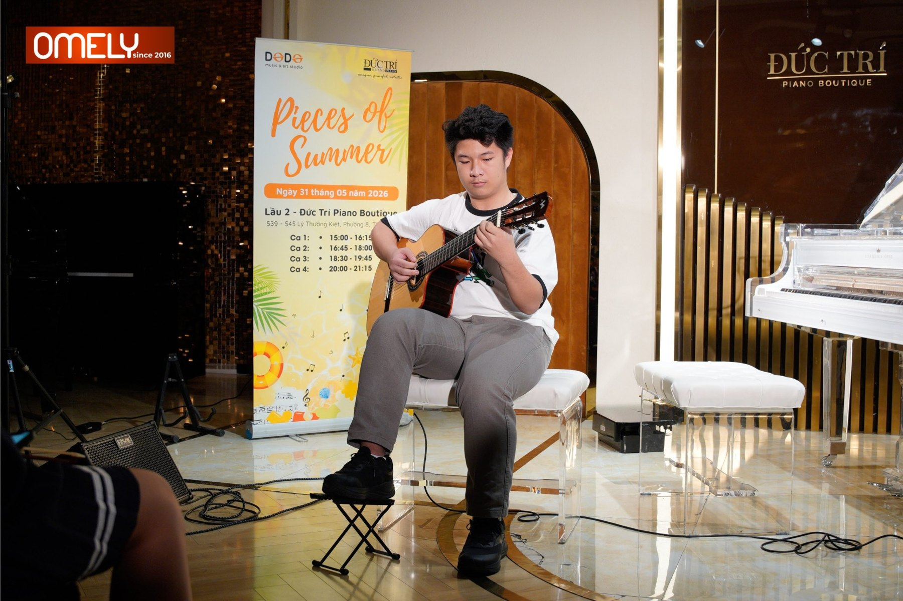

← Back to Music
Live performance · 31 May 2026
Pieces of Summer
Guitar performance at Đức Trí Piano Boutique, Ho Chi Minh City.

Photo album
Scenes from the stage
Scroll sideways through the photographs. Select any image to view it larger; use the arrow keys to move between photos.
Four photographs · Pieces of Summer · 2026
Performance video
Watch the performance
18-second preview from the uploaded recording. The original video is approximately 118 seconds and 125 MB; to keep this GitHub Pages-ready package small, the full recording is not bundled. A hosted full-length video can be embedded later.